Калибровочный
цилиндрический соленоид длиной 500 мм для генерации однородного
магнитного поля в цилиндрической зоне диаметром до 90 мм высотой до 100 мм
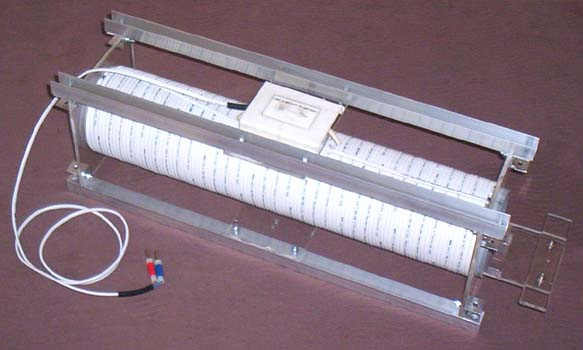
1. Назначение
Основным предназначением рассчитанного и изготовленного достаточно длинного цилиндрического соленоида (длина обмотки 0.5 м) является калибровка магнитометров, измеряющих слабые магнитные поля, сопоставимые с магнитным полем Земли [12, 13], но он также может быть применен и для проведения физических опытов или измерения магнитных свойств материалов. Достаточно большая область магнитного поля сравнительно высокой однородности (на уровне 0.5 %) диаметром до 90 мм (и даже до 100 мм) и высотой до 100 мм позволяет испытывать относительно габаритные датчики феррозондовых приборов [13] или помещать в нее крупные образцы материалов. Генерируемое магнитное поле может быть постоянным, низкочастотным переменным или импульсным в зависимости от характеристик источника тока.
2. Конструкция и расчет магнитного поля
Калибровочный соленоид представляет собой однослойную обмотку длиной 500 мм, размещенную на изоляционном цилиндрическом каркасе диаметром 110 мм (стандартная полипропиленовая труба, внешний диаметр 110 мм, диаметр отверстия примерно 104 мм). В качестве обмоточного провода использован гибкий двухжильный монтажный кабель ШВВП 2 х 0.5 мм2 в поливинилхлоридной (ПВХ) изоляции, каждая из жил которого состоит из пятнадцати медных проволок диаметром примерно 0.2 мм. Площадь поперечного сечения каждой жилы 0.5 мм2 соответствует площади одиночного провода диаметром 0.8 мм, принимаемым для целей расчета. Общее поперечное сечение кабеля в изоляции 4.5 ∙ 3 = 13.5 мм2. Так как на длине намотки 500 мм укладывается ровно 100 витков, то фактор упаковки [14] составляет (2 ∙ 0.5)/((500/100) ∙ 3) ≈ 0.067. При последовательном соединении жил кабеля общее число витков равно 200. На торцы каркаса надеты изоляционные щечки из оргстекла, стянутые с помощью дюралюминиевых швеллеров. Внешний вид изготовленного калибровочного соленоида показан на рис. 2.1. Для размещения испытуемых объектов в центральной зоне соленоида используется немагнитная вставка из оргстекла, вдвигаемая в проходное отверстие до упора.
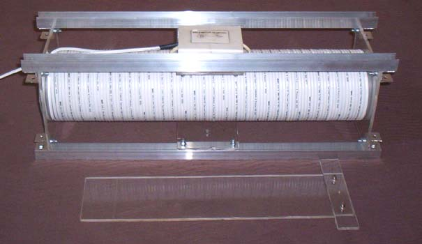
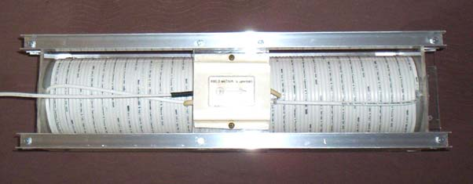
Рис. 2.1. Внешний вид калибровочного соленоида с обмоткой длиной 500 и проходным отверстием диаметром 104 мм в комплекте с немагнитной вставкой из оргстекла.
Эскиз цилиндрического соленоида для целей расчета показан на рис. 2.2.
Рис. 2.2. Цилиндрический соленоид: высота H (H = 500 мм), радиус отверстия R1 (R1 = 55 мм), внешний радиус R2 (R2 = 58 мм), диаметр обмоточного провода D (D = 0.8 мм), фактор упаковки l (l = 0.06703).
Расчет магнитного поля произведен с помощью программы Coil [2] (в версии повышенной точности для расчета длинных соленоидов). Один из результатов представлен на рис. 2.3. Значение фактора упаковки принято равным 0.06703, чтобы расчетное число витков было точно равно 200. Результаты расчетов аксиальной составляющей магнитной индукции приведены в таблице 2.1.
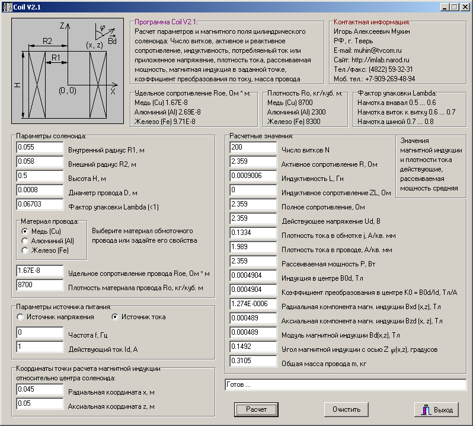
Рис. 2.3. Расчет цилиндрического соленоида с обмоткой из 100 витков провода ШВВП 2 х 0.5 мм2 в ПВХ-изоляции на каркасе диаметром 110 мм с помощью программы Coil [2]. Общее число витков 200 в предположении использования круглого провода равного поперечного сечения (0.5 мм2) диаметром 0.8 мм. Коэффициент преобразования в центре 490.4 мкТл/А. Координаты расчетной точки x = 0.045 м (радиальная координата относительно центра), z = 0.05 м (аксиальная координата относительно центра). Аксиальная составляющая магнитной индукции в расчетной точке 489 мкТл при токе питания 1 А. Радиальная составляющая магнитной индукции в расчетной точке 1.27 мкТл при токе питания 1 А (менее 0.3 % от аксиальной).
Таблица 2.1. Расчет осевой составляющей магнитной индукции для катушки, намотанной проводом ШВВП 2 х 0.5 мм2 в ПВХ-изоляции на каркасе диаметром 110 мм, по оси системы для разных расстояний по радиусу при токе питания 1 А, мкТл (программа Coil, версия повышенной точности для длинных соленоидов).
|
Расстояние от центра по радиусу, мм |
0 |
10 |
20 |
30 |
40 |
45 |
50 |
|
0 |
490.4 |
490.4 |
490.5 |
490.6 |
490.8 |
490.3 |
477.2 |
|
10 |
490.3 |
490.3 |
490.4 |
490.5 |
490.7 |
490.2 |
477.1 |
|
20 |
490.1 |
490.2 |
490.3 |
490.4 |
490.6 |
490.1 |
477.0 |
|
30 |
489.9 |
489.9 |
490.0 |
490.1 |
490.3 |
489.8 |
476.8 |
|
40 |
489.5 |
489.5 |
489.6 |
489.7 |
490.0 |
489.5 |
476.4 |
|
45 |
489.2 |
489.2 |
489.3 |
489.5 |
489.7 |
489.3 |
476.2 |
|
50 |
488.9 |
489.0 |
489.1 |
489.2 |
489.5 |
489.0 |
476.0 |
В центральной цилиндрической зоне диаметром 90 мм высотой 90 м отклонение осевой составляющей магнитной индукции от значения в центре системы (490.4 мкТл) не превышает (490.8 – 490.4)/490.4 ≈ +0.1 % и (489.2 – 490.4)/490.4 ≈ -0.25 %.
В центральной цилиндрической зоне диаметром 90 мм высотой 100 м отклонение осевой составляющей магнитной индукции от значения в центре системы (490.4 мкТл) не превышает (490.8 – 490.4)/490.4 ≈ +0.1 % и (488.9 – 490.4)/490.4 ≈ -0.31 %. Эту зону можно рассматривать как рабочую с однородностью магнитного поля не хуже 0.5 %.
Для сравнения сделаны также расчеты магнитного поля методом конечных элементов [15] с помощью программы Ansoft Maxwell [1] в представлении двумерной модели (рис. 2.4) с принятой точностью расчета на уровне 0.1 %. Магнитодвижущая сила (МДС) обмотки, принятая для целей расчета, равна 200 А ∙ витков (в предположении, что ток питания обмотки составляет 1 А).
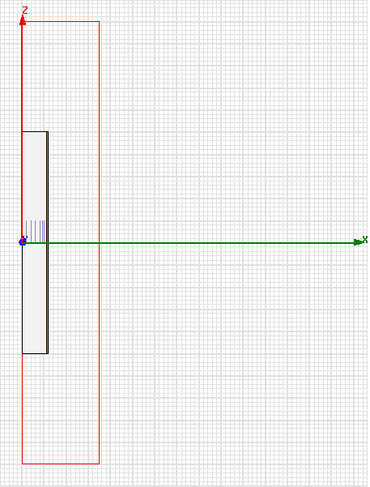
Рис. 2.4. Расчетная модель цилиндрического соленоида с обмоткой из 100 витков провода ШВВП 2 х 0.5 мм2 в ПВХ-изоляции на каркасе диаметром 110 мм для программы Ansoft Maxwell [1]. МДС для целей расчета принята равной 200 А ∙ витков.
Расчетное значение индуктивности 0.90032 мГн на постоянном токе (программа Ansoft Maxwell), расчетное значение активного сопротивления 2.36 Ом (программа Coil).
Измерения активного сопротивления обмотки проводились мультиметром
APPA-107N, измерения индуктивности - приборами VC6243
и Ф4320
на частоте 1000 Гц.
Активное сопротивление обмотки соленоида с
кабелем подключения, измеренное мультиметром APPA-107N,
составляет 2.50 Ом.
Индуктивность соленоида, измеренная прибором VC6243,
составляет 1.0 мГн на частоте 1000 Гц.
Индуктивность соленоида, измеренная прибором Ф4320, составляет 0.77 мГн на
частоте 1000 Гц.
Результаты расчетов аксиальной составляющей магнитной индукции с помощью программы Ansoft Maxwell приведены в таблице 2.2.
Таблица 2.2. Расчет осевой составляющей магнитной индукции для катушки, намотанной проводом ШВВП 2 х 0.5 мм2 в ПВХ-изоляции на каркасе диаметром 110 мм, по оси системы для разных расстояний по радиусу при токе питания 1 А, мкТл (программа Ansoft Maxwell).
|
Расстояние от центра по радиусу, мм |
0 |
10 |
20 |
30 |
40 |
45 |
50 |
|
0 |
490.3 |
490.3 |
490.4 |
490.5 |
490.7 |
490.8 |
490.9 |
|
10 |
490.3 |
490.3 |
490.3 |
490.4 |
490.6 |
490.7 |
490.9 |
|
20 |
490.1 |
490.1 |
490.2 |
490.3 |
490.4 |
490.6 |
490.7 |
|
30 |
489.7 |
489.7 |
489.9 |
490.1 |
490.1 |
490.4 |
490.5 |
|
40 |
489.4 |
489.4 |
489.5 |
489.6 |
489.8 |
490.0 |
490.2 |
|
45 |
489.2 |
489.2 |
489.3 |
489.4 |
489.6 |
489.8 |
490.0 |
|
50 |
488.8 |
488.8 |
489.0 |
489.2 |
489.5 |
489.6 |
489.7 |
В центральной цилиндрической зоне диаметром 90 мм высотой 90 м отклонение осевой составляющей магнитной индукции от значения в центре системы (490.3 мкТл) не превышает (490.8 – 490.3)/490.3 ≈ +0.11 % и (489.2 – 490.3)/490.3 ≈ -0.23 %.
В центральной цилиндрической зоне диаметром 100 мм высотой 100 м отклонение осевой составляющей магнитной индукции от значения в центре системы (490.3 мкТл) не превышает (490.9 – 490.3)/490.3 ≈ +0.13 % и (488.8 – 490.3)/490.3 ≈ -0.31 %.
Зона высокой однородности магнитного поля по расчетам в программе Ansoft Maxwell (диаметр 100 мм, высота 100 мм) несколько больше в радиальном направлении, чем по расчетам с помощью программы Coil (диаметр 90 мм, высота 100 мм). Таким образом, принимаемая в качестве рабочей зоны центральная цилиндрическая область диаметром 90 мм высотой 100 мм по параметру однородности (не хуже 0.5 %) соответствует обоим расчетным методам.
3. Тепловой расчет предельных режимов работы
Калибровочный соленоид может генерировать в центральной области магнитное поле с индукцией несколько более 3.5 мТл при пропускании через обмотку тока 7.5 А, что соответствует плотности тока в проводе 15 А/мм2. При таких плотностях тока естественное и даже принудительное охлаждение обмотки малоэффективно, а продолжительность работы соленоида ограничена временем, за которое достигается максимально допустимая температура используемого обмоточного провода, по сути, при отсутствии охлаждения (для провода в ПВХ-изоляции примерно 100 0C). При таком режиме работе (время работы t в пределах 0 … t0) процесс нагрева обмоточного провода можно считать адиабатическим [3]. Электрическая энергия тока I полностью превращается в тепло, идущее на нагрев провода длиной le, массой m, сопротивлением R:

где cp – молярная изобарная теплоемкость материала провода, M – молярная масса материала провода, DT – разность конечной и начальной температур провода (перегрев). Или
где r – плотность материала провода, re – удельное электрическое сопротивление материала провода, S – площадь поперечного сечения провода. Тогда, сокращая длину отрезка провода le, получим:
Для одиночного прямоугольного импульса тока (I(t) = I0 при 0 < t < t0; I(t) = 0 при t > t0):

Отсюда перегрев провода DT при одиночном прямоугольном импульсе тока с амплитудой I0 и длительностью t0 независимо от длины провода равен:
Для случая
соленоида, намотанного медным проводом:
M =
0.06355 кг/моль
r
= 8700 кг/м3
re
= 1.67 ∙ 10-8 Ом ∙ м
cp
= 24.43 дж/(моль ∙ K)
I0/S = 1.534 ∙ 107 А/м2
(величина тока в самом проводе 7.675 А)
t0
= 60 c
получаем:
Таким образом, при плотности тока в медном обмоточном проводе 15.34 А/мм2 (≈15 А/мм2) его перегрев в течение 60 секунд (такой интервал во многих случаях допустим при проведении измерений) составит 71 0C, т. е. при начальной температуре провода 25 0C его конечная температура не превысит 100 0C, что можно считать одним из предельных рабочих режимов, так как обмотка намотана кабелем в ПВХ-изоляции. Перегрев провода прямо пропорционален времени подачи тока в обмотку соленоида и квадрату величины тока, т. е. и квадрату индукции магнитного поля в соленоиде. Например, можно сгенерировать постоянное магнитное поле порядка 7 мТл, подавая в обмотку ток удвоенной величины (примерно 15 А) в течение не более 15 секунд.
Аналогичный расчет может быть сделан и для импульсного режима работы соленоида. Оперативный расчет перегрева обмотки при прохождении импульсов тока синусоидальной формы выполняет программа dTWire [3]. К примеру для описываемого соленоида при пропускании синусоидального импульса тока длительностью 10 мс его предельная амплитуда составит примерно 800 ... 850 А. Так как активное сопротивление обмотки соленоида составляет 2.5 Ом, то при использовании сравнительно низковольтных генераторов мощных импульсов тока [6 - 8] реально достижимая амплитуда импульса тока при его длительности в пределах 10 мс существенно меньше. Например, расчет параметров импульса для емкостного накопителя энергии 4 кДж 900 В [8] с помощью программы UNI [4] дает амплитуду импульса тока 324.2 А через 1.569 мс после подключения и величину тока 238.2 А в момент времени 10 мс (см. рис. 3.1).
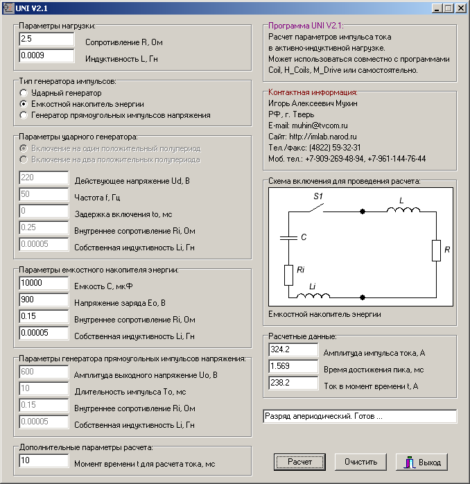
Рис. 3.1. Расчетные значения амплитуды импульса тока и величины тока в момент времени 10 мс при подключении соленоида к емкостному накопителю энергии 4 кДж 900 В [8].
При этом расчетная амплитуда магнитной индукции в центре составляет 158 мТл. Перегрев провода будет в приемлемых пределах (примерно 50 0C). Использование емкостных накопителей на более высокие уровни энергии с тем же максимальным рабочим напряжением не дает прибавки по амплитуде импульса тока, но увеличивает его длительность и, соответственно, перегрев обмотки, который может оказаться избыточным.
Испытания калибровочного соленоида в импульсном режиме совместно с емкостным накопителем энергии 4 кДж 900 В подтверждают проведенные расчеты. Измерение магнитной индукции в центре соленоида производилось с помощью датчика Холла импульсного тесламетра [5]. Для контроля формы импульса магнитной индукции к выходу тесламетра с коэффициентом преобразования 1 В/Тл подключался осциллограф UTD2102CEL-R. Форма импульса магнитной индукции показана на рис. 3.2.
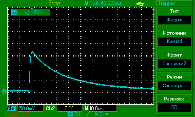
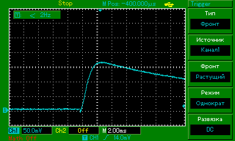
Рис. 3.2. Форма импульса магнитной индукции при подключении калибровочного соленоида к емкостному накопителю энергии 4 кДж 900 В (справа - в растянутом виде). Цена деления по вертикали 50 мТл (коэффициент преобразования 1 В/Тл). Амплитуда магнитной индукции примерно 154 мТл. Длительность переднего фронта импульса (от нуля до амплитудного значения) примерно 2 мс.
Измеренное амплитудное значение магнитной индукции 154 мТл и время нарастания импульса от нуля до максимума вполне соответствуют расчетным (158 мТл, 1.569 мс). Перегрев обмотки за один и даже два последовательных импульса при касании рукой практически не ощущается, то есть с большим запасом находится в допустимых пределах.
4. Технические характеристики калибровочного цилиндрического соленоида:
5. Источники питания и приборы контроля
Для возбуждения тока в обмотке соленоида могут применяться источники питания различной конструкции, обеспечивающие на выходе регулируемое постоянное [10, 11] или переменное [16] напряжение при выходном токе в пределах примерно до 5 А.
Контролировать величину магнитной индукции в рабочей зоне соленоида можно либо напрямую с помощью микротесламетра [12], либо косвенным методом по потребляемому току через расчетный коэффициент преобразования (490.3 мкТл/А). Второй метод может обеспечить более высокую точность при использовании прецизионного амперметра (класс точности не хуже 0.5 %), так как погрешность расчета коэффициента преобразования длинных соленоидов, как правило, находится на уровне 0.5 % или даже меньше.
6. Испытания калибровочного соленоида на постоянном и переменном токе
С помощью цифрового микротесламетра с магниторезистивным датчиком HMC1022 [17] произведены измерения магнитной индукции в центре калибровочного соленоида в зависимости от тока питания обмотки (постоянный ток) с помощью установки, схема которой изображена на рис. 6.1. Обмотка калибровочного соленоида запитывается от регулируемого источника питания [10] через добавочный резистор R1, облегчающий регулировку тока посредством изменения выходного напряжения источника питания. Контроль величины тока осуществляется с помощью амперметра PA1 (мультиметр MY-65, диапазон измерения постоянного тока 20 А). Смена полярности тока производится посредством перестановки штеккеров в гнездах источника питания. Датчик HMC1022 микротесламетра крепится на вставке таким образом, чтобы он оказался близко к центру соленоида, а его измерительная ось была параллельна оси соленоида. Ось соленоида ориентируется в примерном направлении восток-запад, чтобы при отсутствии тока в обмотке показания микротесламетра в этом направлении были близки к нулю.
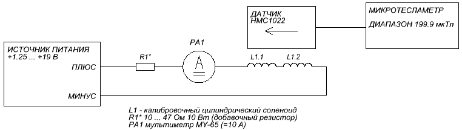
Рис. 6.1. Схема установки для снятия зависимости магнитной индукции в центре калибровочного соленоида от величины тока питания обмотки с помощью микротесламетра с магниторезистивным датчиком HM1022 [17] на постоянном токе. Изменение полярности магнитного поля производится посредством изменения полярности подключения к источнику питания.
Внешний вид установки показан на рис. 6.2.
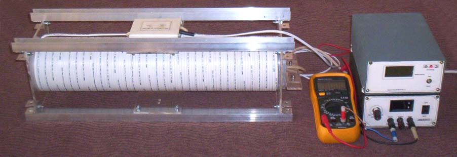
Рис. 6.2. Установка для снятия зависимости магнитной индукции в центре калибровочного соленоида от величины тока питания обмотки с помощью микротесламетра с магниторезистивным датчиком HMC1022 [17] на постоянном токе.
Измерения магнитной индукции произведены в диапазоне токов обмотки -0.4 ... 0 ... +0.4 А. График зависимости показаний прибора от тока через обмотку калибровочного соленоида представлен на рис. 6.3.
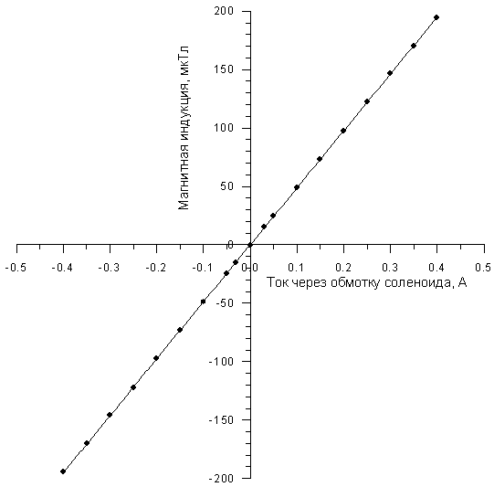
Рис. 6.3. Зависимость индукции постоянного магнитного поля в центре калибровочного соленоида по показаниям цифрового микротесламетра с магниторезистивным датчиком HMC1022 [17] от тока питания обмотки.
Следует заметить, что величина магнитной индукции, рассчитываемая по току и коэффициенту преобразования соленоида, имеет, как правило, более высокую точность, чем показания микротесламетра, которые, скорее, сами получают подтверждение корректности. Для графика на рис. 6.3 показания микротесламетра с датчиком HMC1022 могут быть аппроксимированы выражением: B = 487.36 ∙ I + 0.0368419, где B - магнитная индукция по показаниям микротесламетра, мкТл, I - величина тока обмотки по показаниям мультиметра MY-65. Среднеквадратичное отклонение составляет 0.0694292. Показания вполне соответствуют заявленной точности прибора.
Измерения магнитной индукции в центре калибровочного соленоида с помощью цифрового микротесламетра с трехкомпонентным датчиком HMC5983 [18] в зависимости от тока питания обмотки (постоянный ток) проведены аналогичным образом с помощью установки, схема которой представлена на рис. 6.4. Обмотка соленоида запитывается от регулируемого источника питания [10] через добавочный резистор R1, облегчающий регулировку тока посредством изменения выходного напряжения источника питания. Контроль величины тока осуществляется с помощью амперметра PA1 (мультиметр MY-65, диапазон измерения постоянного тока 20 А). Смена полярности тока производится посредством перестановки штеккеров в гнездах источника питания. Датчик HMC5983 микротесламетра крепится на вставке таким образом, чтобы он оказался близко к центру соленоида, а его ось Y ориентирована по оси соленоида. Ось калибровочного соленоида ориентируется в примерном направлении восток-запад, чтобы при отсутствии тока в обмотке показания микротесламетра в этом направлении (Y-компонента) были близки к нулю.
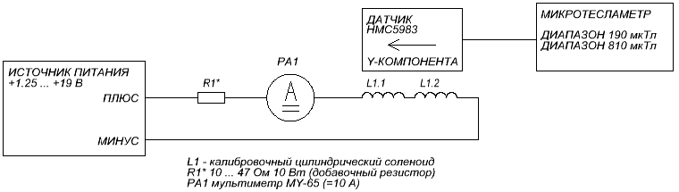
Рис. 6.4. Схема установки для снятия зависимости магнитной индукции в центре калибровочного соленоида от величины тока питания обмотки с помощью микротесламетра с магниторезистивным датчиком HMC5983 [18] на постоянном токе. Изменение полярности магнитного поля производится посредством изменения полярности подключения к источнику питания.
Внешний вид установки показан на рис. 6.5.
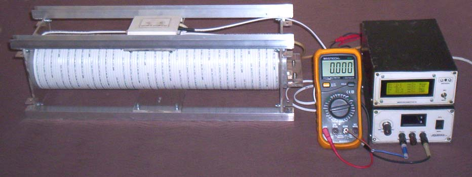
Рис. 6.5. Установка для снятия зависимости магнитной индукции в центре калибровочного соленоида от величины тока питания обмотки с помощью микротесламетра с магниторезистивным датчиком HMC5983 [18] на постоянном токе.
Измерения магнитной индукции произведены в диапазоне токов обмотки -0.35 ... 0 ... +0.35 А для диапазона 190 мкТл и в диапазоне токов -1.0 ... 0 ... +1.0 А для диапазона 810 мкТл микротесламетра с датчиком HMC5983. Графики зависимости показаний прибора от тока через обмотку калибровочного соленоида изображены на рис. 6.6.
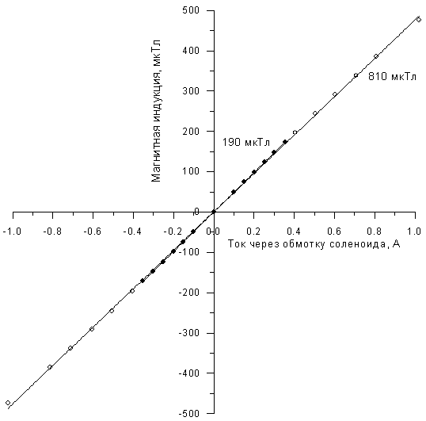
Рис. 6.6. Зависимость индукции постоянного магнитного поля в центре калибровочного соленоида по показаниям цифрового микротесламетра с магниторезистивным датчиком HMC5983 [18] от тока питания обмотки на разных диапазонах измерений (190 - ● и 810 мкТл - ○).
В соответствии с графиками рис. 6.6 на диапазоне 190 мкТл показания микротесламетра с датчиком HMC5983 могут быть аппроксимированы выражением: B = 489.291 ∙ I + 0.171704 (среднеквадратичное отклонение 0.108333), на диапазоне 810 мкТл: B = 475.966 ∙ I + 0.457426 (среднеквадратичное отклонение 20.3861), где B - магнитная индукция по показаниям микротесламетра, мкТл, I - величина тока обмотки по показаниям мультиметра MY-65. На диапазоне 810 мкТл показания получаются несколько заниженными для более высоких значений магнитной индукции, но в целом вполне соответствуют заявленной точности прибора.
На переменном токе измерения магнитной индукции в центре калибровочного соленоида проведены с помощью установки, схема которой изображена на рис. 6.7. Обмотка калибровочного соленоида подключена через добавочный резистор R1 к усилителю мощности низкой частоты [16], на вход которого подается синусоидальный сигнал от задающего генератора, в качестве которого служит генератор осциллографа INSTRUSTAR ISDS2062B, подключенного к USB-порту компьютера. Контроль действующего значения тока осуществляется с помощью амперметра PA1 (мультиметр MY-65, диапазон измерения переменного тока 20 А). Резистор R1 облегчает регулировку тока посредством регулировки усиления усилителя мощности. В качестве измерительного преобразователя служит микротесламетр с магниторезистивным датчиком HMC1022 [17], к выходу которого, имеющему коэффициент преобразования 1 мВ/мкТл, подключен вольтметр PV1, измеряющий действующее значение переменного напряжения (мультиметр APPA-107N, диапазоны измерения переменного напряжения 200 мВ или 2 В). Датчик HMC1022 микротесламетра крепится на вставке таким образом, чтобы он оказался близко к центру калибровочного соленоида, а его измерительная ось была параллельна оси соленоида, сориентированной в примерном направлении восток-запад, чтобы при отсутствии тока в обмотке показания микротесламетра по постоянному магнитному полю были близки к нулю.
Внешний вид установки показан на рис. 6.8.

Рис. 6.7. Схема установки для снятия зависимости магнитной индукции в центре калибровочного соленоида от величины тока питания обмотки с помощью микротесламетра с магниторезистивным датчиком HM1022 [17] на переменном токе.
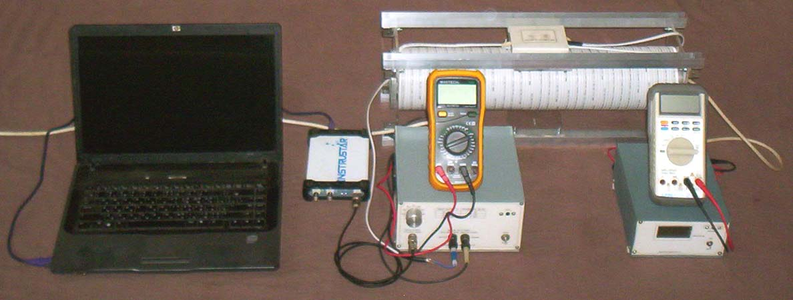
Рис. 6.8. Установка для снятия зависимости магнитной индукции в центре калибровочного соленоида от величины тока питания обмотки с помощью микротесламетра с магниторезистивным датчиком HMC1022 [17] на переменном токе.
Измерения магнитной индукции произведены в диапазоне токов обмотки 0 ... ~1.0 А на двух частотах 60 и 180 Гц. Графики зависимости выходного сигнала прибора от тока через обмотку калибровочного соленоида представлены на рис. 6.9.
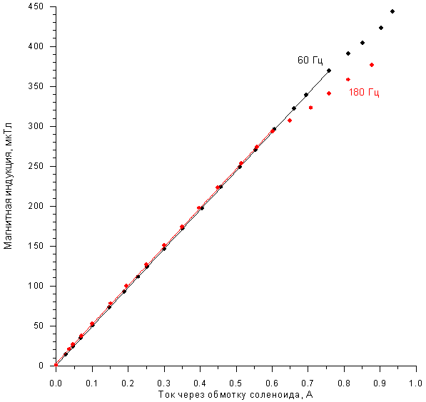
Рис. 6.9. Зависимость индукции переменного синусоидального магнитного поля в центре калибровочного соленоида по выходному сигналу цифрового микротесламетра с магниторезистивным датчиком HMC1022 [17] от тока питания обмотки на разных частотах. Значения магнитной индукции и тока действующие.
На частоте 60 Гц вплоть до величины тока обмотки 0.75 А показания прибора могут быть аппроксимированы выражением B = 486.354 ∙ I + 0.702269, где B - действующее значение магнитной индукции, I - действующее значение тока обмотки. Среднеквадратичное отклонение составляет 0.122972. Соответственно, на частоте 180 Гц до тока обмотки 0.6 А B = 485.482 ∙ I + 3.45303 (среднеквадратичное отклонение 1.79822).
Отклонения показаний прибора от прямой в сторону более низких значений при повышении тока обмотки, а также при повышении частоты, обусловлены ограниченностью его рабочего диапазона по магнитной индукции и довольно узкой полосой пропускания.
Аналогичным способом произведены измерения магнитной индукции переменного магнитного поля в центре калибровочного соленоида с помощью измерительной катушки [9] (рис. 6.10).
Рис. 6.10. Внешний вид измерительной катушки [9] для измерения индукции переменного магнитного поля. Активное сопротивление 238 Ом, индуктивность 54 мГн, коэффициент преобразования на частоте 50 Гц 109 мВ/мТл.
Схема установки для измерений магнитной индукции на переменном токе с помощью измерительной катушки представлена на рис. 6.11. Обмотка калибровочного соленоида подключена через добавочный резистор R1 к усилителю мощности низкой частоты [16], на вход которого подается синусоидальный сигнал от задающего генератора осциллографа INSTRUSTAR ISDS2062B, подключенного к USB-порту компьютера. Контроль действующего значения тока осуществляется с помощью амперметра PA1 (мультиметр MY-65, диапазон измерения переменного тока 20 А). Резистор R1 облегчает регулировку тока посредством регулировки усиления усилителя мощности. Измерительная катушка расположена в центре калибровочного соленоида таким образом, что ее ось совпадает с осью соленоида, и подключена к вольтметру PV1, измеряющему действующее значение переменного напряжения (мультиметр APPA-107N, диапазон измерения переменного напряжения 2 В). Внешний вид установки показан на рис. 6.12.

Рис. 6.11. Схема установки для снятия зависимости магнитной индукции в центре калибровочного соленоида от величины тока питания обмотки с помощью измерительной катушки [9] на переменном токе.

Рис. 6.12. Установка для снятия зависимости магнитной индукции в центре калибровочного соленоида от величины тока питания обмотки с помощью измерительной катушки [9] на переменном токе.
Так как чувствительность измерительной катушки на частоте 50 Гц составляет 109 мВ/мТл, то на частоте 60 Гц она будет равна 130.8 мВ/мТл, а на частоте 240 Гц - 523.2 мВ/мТл (без учета изменения чувствительности за счет паразитной емкости катушки). Тогда можно записать B = 7.64526 ∙ U на частоте 50 Гц, B = 1.911315 ∙ U на частоте 240 Гц (где B - магнитная индукция в мкТл, U - напряжение на выводах измерительной катушки в мВ).
Измерения магнитной индукции произведены в диапазоне токов обмотки 0 ... ~1.0 А на двух частотах 60 и 240 Гц. Графики зависимости рассчитанной по показаниям прибора магнитной индукции от тока через обмотку калибровочного соленоида представлены на рис. 6.13.
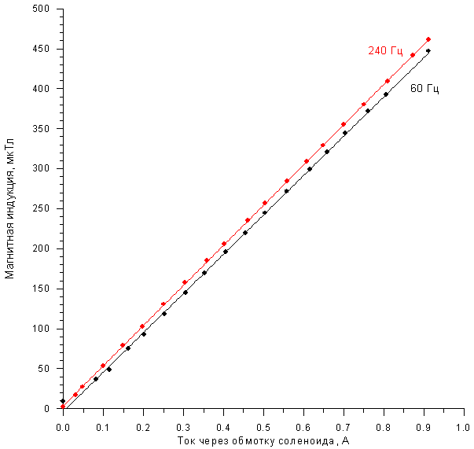
Рис. 6.13. Зависимость индукции переменного синусоидального магнитного поля в центре калибровочного соленоида по выходному сигналу измерительной катушки [9] от тока питания обмотки на разных частотах. Значения магнитной индукции и тока действующие
На частоте 60 Гц зависимость магнитной индукции B от тока обмотки калибровочного соленоида может быть выражена следующим образом: B = 491.204 ∙ I - 3.21942 (среднеквадратичное отклонение 13.255), а на частоте 240 Гц: B = 501.899 ∙ I + 3.65451 (среднеквадратичное отклонение 0.600409). Для случая более высокой частоты чувствительность катушки возрастает предположительно за счет паразитной емкости.
7. Заключение
В соответствии с проведенными расчетами изготовлен и испытан калибровочный цилиндрический соленоид, отличительными особенностями которого являются простота и воспроизводимость конструкции, а также большие размеры зоны однородного магнитного поля. Измеренные характеристики устройства соответствуют расчетным. Калибровочный соленоид предполагается использовать в качестве одной из образцовых мер магнитной индукции при калибровке и поверке магнитометров [12, 13].
Ссылки:
09.03.2021
Альтернативные источники
энергии
Компьютеры и
Интернет
Магнитные поля
Механотронные системы
Перспективные
разработки
Электроника и
технология